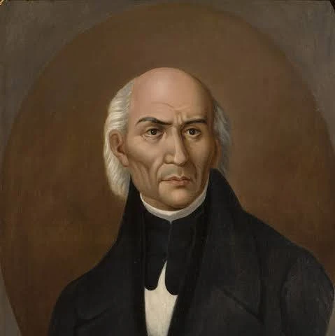
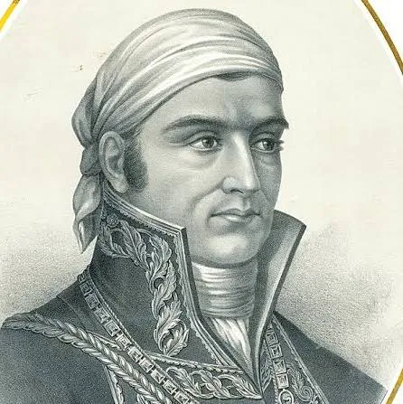
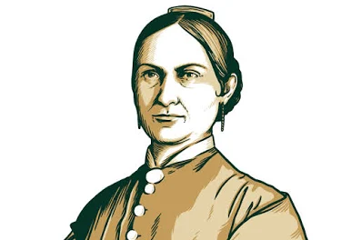
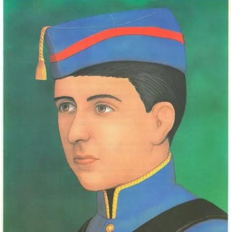

Fechas Patrias de México
Un recorrido por los momentos clave, personajes ilustres y curiosidades que forjaron la Independencia de México.
Personajes Ilustres

Miguel Hidalgo
Padre de la PatriaSacerdote que dio el Grito de Dolores el 16 de septiembre de 1810.

Jose Maria Morelos
Siervo de la NaciónMilitar insurgente y estratega brillante. Redactó los Sentimientos de la Nación.

Josefa Ortiz de Domínguez
La CorregidoraAlertó a los conspiradores la noche del 13 de septiembre de 1810.

Juan Escutia
Niño HéroeCadete que se envolvió en la bandera nacional y saltó desde el Castillo de Chapultepec.